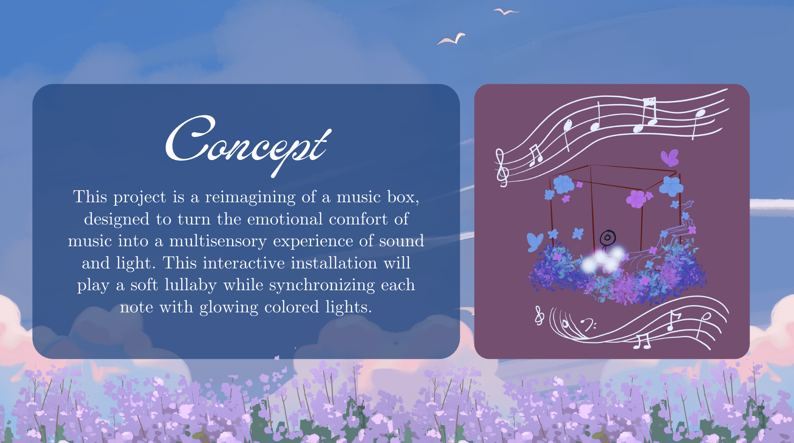
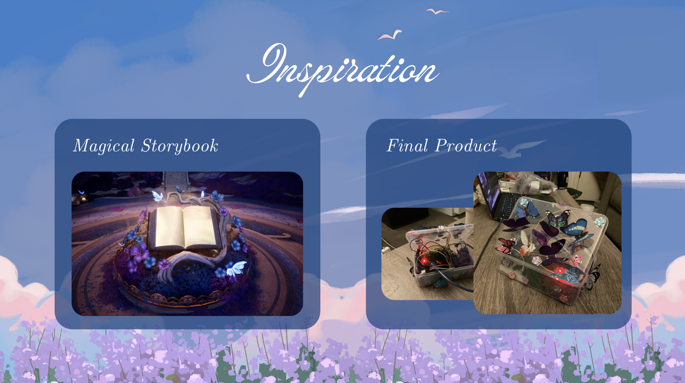
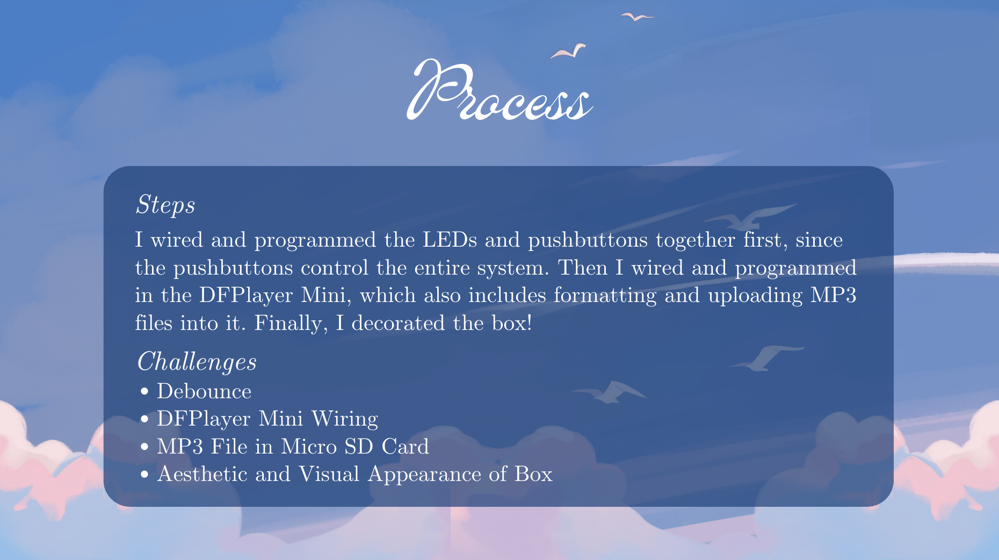
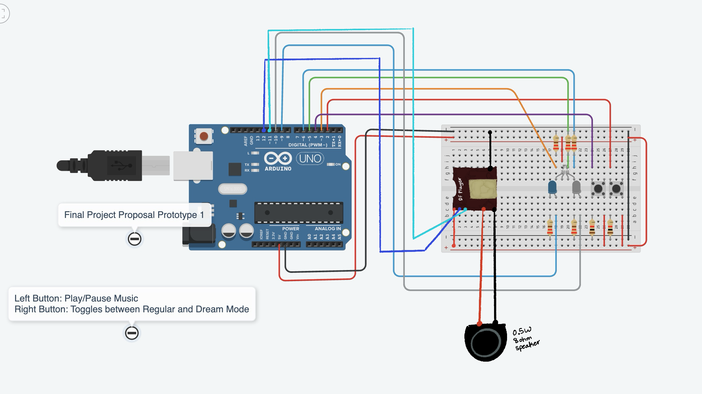
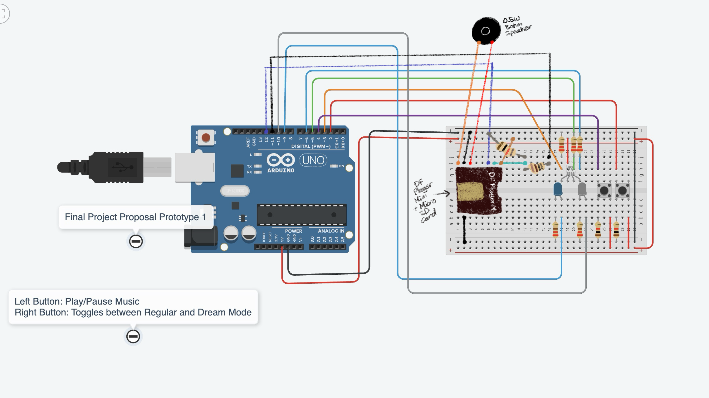

Lullaby in Light

This project presents a reimagined music box that combines both visual art and music using an Arduino and a set of LEDs to evoke a dreamlike, sensory experience. Inspired by the emotional comfort music brings, the piece transforms that intangible feeling into a physical and interactive object.
A pair of buttons allows users to toggle power and switch between two modes: Regular Mode and Dream Mode. Regular Mode plays a gentle lullaby accompanied by soft light patterns. In turn, Dream Mode plays a randomized track with changing LED patterns, depending on what track plays. These LED patterns are carefully choreographed across an RGB LED, a white LED, and a blue LED to simulate waves, breathing, starlight, and so on. The music is stored on a micro SD card and is read through a DFPlayer Mini module. Various technical challenges involved troubleshooting debouncing button inputs, Arduino module wiring, editing MP3 files, and designing the music box. The result is an intimate, artistic interface where sound and light interact to create a calming and immersive experience. This project is designed not only as a technical showcase but as a personal expression of how digital tools can be used to turn emotional themes into shared art.



The images below show the Arduino schematics for creating this music box. The left image is the first prototype schematic. The right image is the final schematic.

